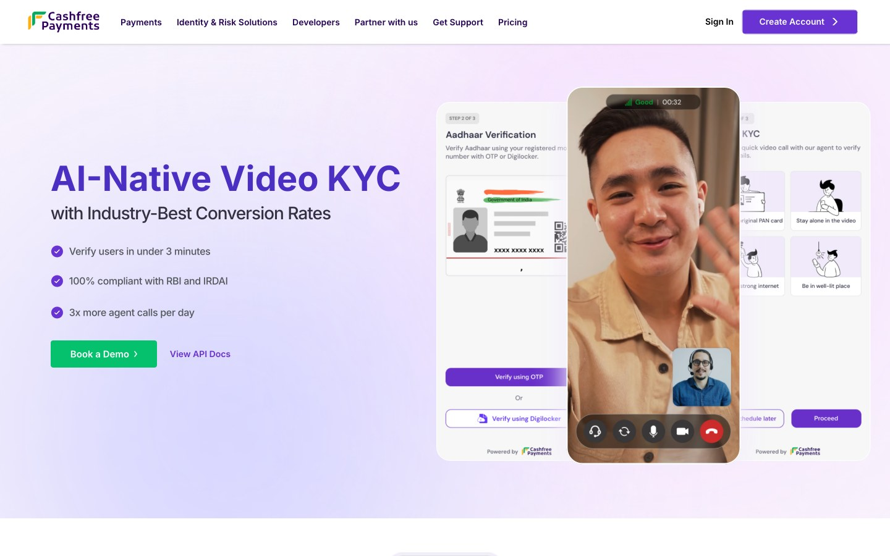

Context & Role
Video KYC involves a complex ecosystem: customers, merchants, agents, auditors, and compliance teams. I acted as the single point of accountability for design, coordination, and decision-making.
Responsibilities
- Customer verification flow
- Merchant dashboard
- Agent workspace
- Auditor review portal
Leadership Actions
- Set experience vision
- Guided junior designers
- Influenced tech stack
- Aligned Sales & Marketing
Problem & Insights
The Strategic Opportunity
Companies using competitor solutions reported inconsistent UX that varied across use cases and dropped calls during peak volume. The verification industry was operating on infrastructure built for compliance, not conversion.
From discovery calls with companies running competitor Video KYC services.
Every company flagged the same step: customers stalled at personal detail collection and dropped. The flow gave no indication of what came next or why the information was needed.
Agents were managing live video calls while switching between separate tabs for document verification. Companies reported this split-screen workflow as their biggest source of call delays and agent error.
Auditors were catching discrepancies after cases were closed. Without structured review workflows, compliance slips went undetected until they became escalations requiring costly manual rework.
Merchants had no real-time view into where customers were in the verification flow or why calls were failing. They were operating blind and flagging issues only after business was lost.
Experience Strategy
I structured the interface around the operational realities of the users. This let us design a cohesive ecosystem rather than disconnected modules.
Needed guidance and clarity to reduce anxiety.
Needed efficiency and stable controls to manage calls.
Needed quick review tools to process cases at scale.
Needed oversight, reporting, and configuration control.
Customer Flow
The goal was to reduce anxiety. We redesigned the journey into a clear, confidence-building flow with contextual nudges, progress indicators, and structured document capture.
Open fullscreen in Figma ↗Agent Workspace
Agents need extreme efficiency. We designed a unified interface where live video controls float directly over data entry forms. This allows agents to verify documents without breaking eye contact with the customer.
Open fullscreen in Figma ↗Auditor Portal
Auditors work on high volumes. The review portal features timestamped video playback, auto-flagged discrepancies, and keyboard shortcuts for rapid approval or rejection decisions.
Open fullscreen in Figma ↗Product Evangelism
Collaborated with Varun (PM) and Shubham (Eng Lead) to record the official product vision.

Align internal sales teams and external clients on why we built this: addressing the key friction points in the credit funnel.
I walked through the Agent and Auditor experiences, demonstrating how our design choices directly improved efficiency and reduced fraud.
Sixty Days to Success.
From kickoff to launch in 60 days. The numbers that came back proved the design decisions were right.
Learnings & Challenges.
Navigating Challenges
Built a clear case, aligned stakeholders, and secured approval for a new frontend stack.
Designed within RBI rules while maintaining a polished and modern experience.
Took ownership of communication and decision making to keep the project on track.
Influencing Technical Decisions.
That framing immediately put UX on the backseat. That was not acceptable. For Video KYC, experience was not a nice to have. It was a core market differentiator in a trust-critical product.
Instead of escalating or debating opinions, I reframed the conversation around four measurable outcomes: video stability (real-time performance), call efficiency (duration and drop-offs), conversion (agent efficiency rates), and long-term scalability (tech debt).
The Middle Ground
- Retained the existing stack to reduce short-term engineering risk
- Introduced a component-first architecture on top of it
- Built new, modular components optimized specifically for Video KYC workflows
Why this mattered
The outcome: protected experience quality in a trust-critical product, enabled faster iteration after launch, reduced long-term rework, and proved that design can influence without authority.
Driving the GTM Story & Launch Execution.
Beyond designing the product experience, I took ownership of how Video KYC would be introduced to the market. We were operating under tight deadlines with limited design and marketing bandwidth, so I stepped in to build the launch assets myself and ensure the story was consistent across product and brand.
Marketing launch video
I initiated and drove the creation of our official Video KYC launch film. I worked closely with Varun and Shubham to shape the narrative, define the visual direction and ensure the video communicated the simplicity and trust that our experience was built on.
This was not just a production task. It was design leadership ensuring the story we told the world matched the product we had created.

Website design and build on Framer
Due to resource constraints and a hard deadline, I designed and developed the entire Video KYC landing page myself on Framer in two days. This ensured our product had a credible, enterprise-ready presence during sales pitches and customer conversations.

AI-powered multilingual transcription.
The next version of Video KYC can unlock more operational efficiency and market expansion. These opportunities came directly from merchant conversations during early sales discovery.
During a discussion with a merchant who was already using a competitor's Video KYC service, we asked a simple question:
"What can we build that would convince you to switch to Cashfree?"
His answer was immediate:
"Yar mujhe alag alag language speaking waley bandey dhundna aur hire karna padta hain and unko train bhi to ensure business India bhar mein hota rahe."
"I have to find and hire people who speak different languages, and train them too, just to make sure business keeps running across India."
This was the spark. It pointed directly to the opportunity: language barriers were driving operational cost, training complexity, and slower onboarding across regions. One conversation, one clear problem: real-time multilingual transcription and translation powered by AI.
Open fullscreen in Figma ↗What this unlocks
- Agents no longer need to match the customer's native language.
- Calls become more accessible across Tier 2 and Tier 3 markets.
- Training time and hiring complexity drop significantly.
- Merchants expand reach without scaling agent headcount at the same rate.
- Customer trust increases because they can speak naturally in their language.